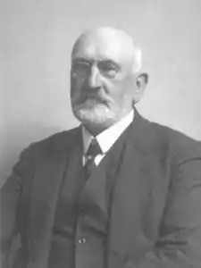

Шухевич Володимир Осипович (1849—1916) — етнограф, краєзнавець, педагог, громадський діяч.
Дід Р. Шухевича. Народився в с. Тишківцях Коломийської округи (Галичина) в сім’ї священика і письменника О. Шухевича. Навчався в Львівському університеті. Після його закінчення (з 1876 р.) вчителював у м. Львові; у 1902—1908 рр. — кустос (хранитель фондів) Музею імені Дзєдушицьких, у якому започаткував відділи природничих наук та етнографії. Ініціатор і керівник львівських культурно-просвітницьких і мистецьких організацій: "Руська бесіда" (1895—1910 рр.), "Боян" (1891 р.), Музичного товариства ім. М. Лисенка (1903—1915 рр.), для якого збудував будинок. Один із засновників товариства "Просвіта"; член його Головного Виділу, за дорученням якого влаштував окремий павільйон на 1-й всекрайовій виставці у Львові (1894 р.). Член Руського (пізніше — Українського) педагогічного товариства; Наукового товариства імені Т. Шевченка у Львові; Австрійського товариства природознавства (з 1901 р.); Етнографічного товариства Чехословаччини (з 1903 р.). Редактор журналів "Дзвінок" (1893—1895 рр. ; його засновник), "Учитель" (1893—1905 рр.), гумористичної газети "Зеркало" (1906—1908 рр.); співредактор видань "Зоря" і "Діло". Помер у м. Львові.
Як етнограф відзначився організацією краєзнавчих експедицій на Гуцульщину, на матеріалі яких створив фундаментальну п’ятитомну працю "Гуцульщина" (1897—1908; польське видання — 4 тт., 1902—1908), ґрунтовно проаналізувавши в ній головні особливості народного побуту, звичаї, обряди, фольклор гуцулів і використавши широку історико-етнографічну джерельну базу. Уклав також кілька навчальних посібників — "Веснянка: Читаночка для малих і старих" (1881) та ін., популярних брошур — "Дещо про здоровлє, або як треба жити, щоб устеречись хороби" (1881) та ін., підручник з хімії для середньої школи (1894).